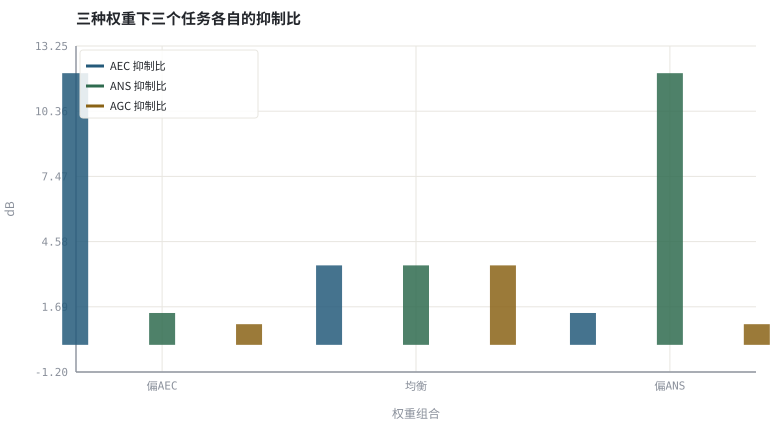
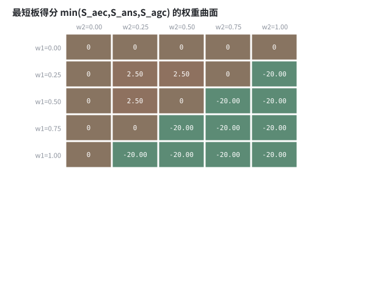

第 26 章联合 3A：多任务、级联与端到端建模
三个目标共用一个模型时，真正要调的不是网络深度，而是损失与约束。
本章位置：第 24 章 · 神经 AEC 与回声/噪声联合抑制～第 25 章 · 神经增益控制与感知响度 分头替换模块，本章合并；第 27 章 · 因果性与流式推理：状态缓存、感受野 起转入部署三本账：因果、延迟、量化。
多任务学习是共享底座 + 三个 head，损失权重 λ 就是三个 SLO 的优先级；扫 λ 相当于画系统的 Pareto 前沿。
- 能比较级联式、多任务式与端到端式三种联合 3A 结构。
- 能写出多任务损失并解释权重对结果的影响。
- 能量化 AEC / ANS / AGC 三个校正加权后的权衡曲面。
- 能说明联合模型的失效模式与可观测性代价。
§知识点地图
每个知识点都配了 1～2 个扩展学习链接；本章完整资源清单见 扩展学习。
| # | 知识点 | 扩展学习 | 状态 |
|---|---|---|---|
| 1 | 级联与联合 | SpeechBrain ↗ · ClearerVoice-Studio ↗ | 正文已覆盖 |
| 2 | 多任务损失 | Asteroid ↗ · SpeechBrain ↗ | 正文已覆盖 |
| 3 | 损失权重与 Pareto 前沿 | Asteroid ↗ · SpeechBrain ↗ | 正文已覆盖 |
| 4 | 共享编码器 | SpeechBrain ↗ · ClearerVoice-Studio ↗ | 正文已覆盖 |
| 5 | 任务冲突与负迁移 | SpeechBrain ↗ · ClearerVoice-Studio ↗ | 正文已覆盖 |
| 6 | 端到端可微分链路 | SpeechBrain ↗ · ClearerVoice-Studio ↗ | 正文已覆盖 |
| 7 | 可观测性下降 | SpeechBrain ↗ · ClearerVoice-Studio ↗ | 正文已覆盖 |
| 8 | 消融实验 | SpeechBrain ↗ · ClearerVoice-Studio ↗ | 正文已覆盖 |
§26.1三种结构，一条链路
L = λ₁·L_AEC + λ₂·L_ANS + λ₃·L_AGC + λ₄·L_SI-SDR
| 结构 | 模块关系 | 优点 | 缺点 |
|---|---|---|---|
| 级联式 | AEC → NS → AGC 各自独立 | 可定位失效、可分别调优 | 误差逐级累积，无法联合优化 |
| 多任务式 | 共享编码器 + 三个输出头 | 特征复用、算力省 | 任务冲突时负迁移 |
| 端到端式 | 一个网络直接输出波形 | 全局目标最优 | 需要海量数据、可解释性最差 |
从 第 16 章 · 3A 级联顺序与模块间相互干扰 的级联顺序到本章的联合模型，不变量一个都没少：参考信号必须未经加工、因果性不能破、AGC 之后评测要尺度对齐。变的是「谁来负责每一项误差」从三个模块变成一个损失组合。
§26.2权重不是超参，是产品规格
- 任务冲突：AEC 想压掉远端相关成分，ANS 想保留一切像语音的成分；双讲时二者方向相反，需要显式的双讲条件或任务门控。
- Pareto 前沿：把 λ 扫一遍画出 ERLE—segSNR 曲线，才能说明「没有免费午餐」，单点分数没有意义。
- 消融：必须单独关掉每个任务头，验证它确实有贡献；否则共享编码器可能只是把最简单的任务做对了。
- 可观测性：级联链路能旁路定位，端到端模型出问题只能靠输入/输出对比。
本实验构造三种彼此独立的退化（回声、噪声、时变电平），并给出三个只在自己那一轴上有效的 oracle 校正；权重之和固定为 1，模拟「多任务头共享有限容量」。扫描权重画出权衡曲面，不代表任何真实多任务网络的训练结果。
§Python 实验
实验 26-1 · 三类 oracle 校正的加权扫描与权衡曲面
#!/usr/bin/env python3
# -*- coding: utf-8 -*-
"""构造回声、噪声、时变电平三种退化与三个 oracle 校正，扫描权重画出综合得分热力图。
全部语音 / 噪声 / 房间冲激响应均为代码合成信号，仅用于教学演示机制与量级。
"""
from __future__ import annotations
import math
import pathlib
import random
import statistics
import sys
import time
_here = pathlib.Path(__file__).resolve()
for _p in _here.parents:
if (_p / "tools" / "dsp.py").exists():
sys.path.insert(0, str(_p / "tools"))
break
from dsp import (SAMPLE_RATE, fft, hann, stft, istft, magnitude_db, spectrum,
white_noise, tone, chirp, synthetic_speech, rir, convolve,
fft_convolve, delay, clip, normalize_peak, rms, rolling_rms,
smooth, db, energy_db, snr_db, erle_db, seg_snr_db,
scale_align, si_sdr_db, lufs_approx,
write_wav, read_wav, wav_info)
from chart import Chart, heatmap, BLUE, RED, GREEN, AMBER
FIG = _here.parents[1] / "fig"
AUDIO = _here.parents[1] / "audio"
FIG.mkdir(exist_ok=True)
AUDIO.mkdir(exist_ok=True)
random.seed(7)
# ---- 参数区 ----
N = 6000
LEVEL_MIN, LEVEL_SWING = 0.85, 0.15 # 时变电平（AGC 要修的退化）
GRID = (0.0, 0.25, 0.50, 0.75, 1.00)
# ---- 计算与作图 ----
rng = random.Random(7)
clean = synthetic_speech(rng, N)
far = synthetic_speech(rng, N)
h = rir(rng, 128, decay=0.006)
echo = [0.35 * v for v in fft_convolve(far, h)[:N]]
noise = white_noise(rng, N, 0.070)
level = [LEVEL_MIN + LEVEL_SWING * math.sin(2 * math.pi * i / N) for i in range(N)]
base = [clean[i] + echo[i] + noise[i] for i in range(N)]
y = [level[i] * base[i] for i in range(N)]
# 三个 oracle 校正：各自只负责一种退化，权重之和为 1 意味着算力/预算被分摊
corr_aec = [-level[i] * echo[i] for i in range(N)]
corr_ans = [-level[i] * noise[i] for i in range(N)]
corr_agc = [(1.0 - level[i]) * base[i] for i in range(N)]
echo_scaled = [level[i] * echo[i] for i in range(N)]
def task_score(w):
return min(35.0, -20.0 * math.log10(max(1e-4, 1.0 - w)))
def apply(w1, w2):
w3 = 1.0 - w1 - w2
out = [y[i] + w1 * corr_aec[i] + w2 * corr_ans[i] + w3 * corr_agc[i] for i in range(N)]
residual = [out[i] - clean[i] for i in range(N)]
e = erle_db(echo_scaled, residual)
s = seg_snr_db(clean, scale_align(out, clean))
tasks = [task_score(w) for w in (w1, w2, w3)]
return min(tasks), tasks, out, e, s
matrix, best = [], (-1e9, 0.0, 0.0, None)
for w1 in GRID:
row = []
for w2 in GRID:
if w1 + w2 > 1.0 + 1e-9:
row.append(-20.0)
continue
score, tasks, out, e, s = apply(w1, w2)
row.append(round(score, 2))
if score > best[0]:
best = (score, w1, w2, out)
matrix.append(row)
eq_out = apply(1.0 / 3, 1.0 / 3)[2]
a1, a2, a3 = apply(0.75, 0.15), apply(1.0 / 3, 1.0 / 3), apply(0.15, 0.75)
c = Chart(FIG / "26-grid.svg", "三种权重下三个任务各自的抑制比", xlabel="权重组合", ylabel="dB",
xticks=[(0, "偏AEC"), (1, "均衡"), (2, "偏ANS")])
for j, (name, color) in enumerate((("AEC 抑制比", BLUE), ("ANS 抑制比", GREEN), ("AGC 抑制比", AMBER))):
dx = (j - 1) * 0.24
c.bars([i + dx for i in range(3)], [a[1][j] for a in (a1, a2, a3)], color, label=name)
print("任务图:", c.save())
heatmap(FIG / "26-surface.svg", matrix,
["w1=%.2f" % v for v in GRID], ["w2=%.2f" % v for v in GRID],
title="最短板得分 min(S_aec,S_ans,S_agc) 的权重曲面", vmin=-20, vmax=12, annotate=True)
print("曲面图:", str(FIG / "26-surface.svg"))
write_wav(AUDIO / "26-equal.wav", normalize_peak(eq_out))
write_wav(AUDIO / "26-best.wav", normalize_peak(best[3]))
for name, a in (("偏AEC", a1), ("均衡", a2), ("偏ANS", a3)):
print("%s 三项抑制比(AEC/ANS/AGC)=%.1f/%.1f/%.1f dB | 最短板=%.1f dB" %
(name, a[1][0], a[1][1], a[1][2], a[0]))
print("最短板最优=%.2f dB (w1=%.2f w2=%.2f w3=%.2f) | SAMPLE_RATE=%d" %
(best[0], best[1], best[2], 1.0 - best[1] - best[2], SAMPLE_RATE))操作：观察哪个权重组合让三项抑制比都不至于太低；对照热力图的高分区位置。 预期与判读：偏重任一任务都会让另外两项成为短板：偏 AEC 时 ANS/AGC 抑制比只有 1 dB 左右，偏 ANS 时反之。以「最短板」为综合分时，最优落在三项都不太低的内部区域（本例网格上为 w1=w2=0.25, w3=0.50）。λ 的选择本质上是产品规格，不是纯调参。
改参数看趋势：把综合分改成 0.4*ERLE+segSNR（单一指标），最优点会跑到角落——这正是单指标评测的陷阱。 文件位置：part5/26-joint-3a/code/26-joint-3a.py


26-equal.wav
三个任务等权重的输出（16 kHz / 16-bit 单声道，代码合成信号，不是真实录音）
26-best.wav
扫描得到的最优权重输出（16 kHz / 16-bit 单声道，代码合成信号，不是真实录音）
代码块右上角可一键复制；仓库里的 code/*.py 由 tools/extract_code.py 从这些代码块自动抽取。脚本只用标准库、固定 random.seed(7)，运行后写出 fig/*.svg 与 audio/*.wav；批量运行用 ./tools/run_python.sh。
§可选真机命令片段
以下命令不参与批量运行，需要本机自行安装对应工具。滤镜是否可用取决于本机 ffmpeg 版本与编译选项，请先用 ffmpeg -filters / ffmpeg -version 自查，并以 https://ffmpeg.org/ffmpeg-filters.html 与各自官方文档为准；本书不假定任何特定版本具备某项能力。
查看多任务/联合增强的开源配方
git clone --depth 1 https://github.com/modelscope/ClearerVoice-Studio && ls ClearerVoice-Studio/说明：该框架含增强、分离与超分的多任务配方；请以其 README 与许可为准，本书实验不依赖 PyTorch。
§本章参考资料
按本章知识点挑选的精读资料；更多检索入口见 扩展学习。
§相关开源工程
下列工程仅作技术参照，版权与许可证归各自维护者所有。本书实验不依赖它们，也与之无从属关系。
§常见误区
- 把三个任务的损失直接相加而不做量级归一化。
- 只报综合得分，不画 ERLE—segSNR 权衡曲线。
- 不做任务消融就宣称多任务带来收益。
- 联合后丢掉级联链路的旁路定位能力却没有补偿监控。
§习题与思考
- 写出含四项的多任务损失并说明每项的量级。
- 解释双讲时 AEC 与 ANS 目标为何冲突。
- 设计一组能验证「共享编码器是否真的有用」的消融。
§扩展学习
继续检索
- Google Scholar：joint 3A multi task speech enhancement ↗
- arXiv：joint 3A multi task speech enhancement ↗
- GitHub：joint 3A multi task speech enhancement ↗
全书链接总表见 FFmpeg Filters 文档 ↗ 与 附录 A.7；滤镜是否可用请以本机 ffmpeg -filters 为准。